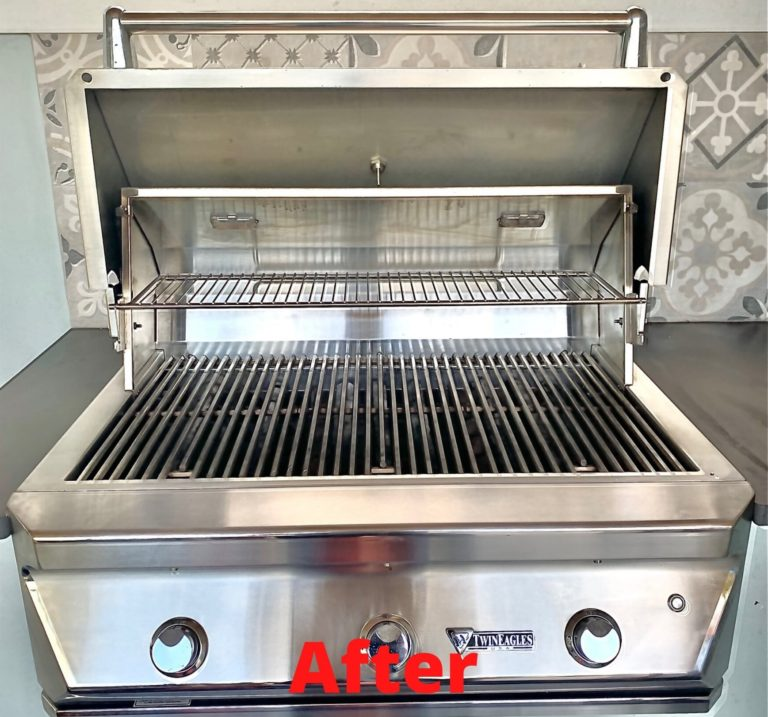

Health Impact
The number one for most people is your health and the health of your loved ones. Dirty bbq grills can have Harmful bacteria and residue that build up over time as well as rodent and insect waste that found its way onto your grill. Simply scraping off the food residue and grease after grilling isn't an effective method.
When you use the dirty grill at a later date the harmful carcinogens are still there and can be transferred to your food and then into your body. Our grill cleaning service is the most effective way to remove all those harmful carcinogens and make sure your food is safe, and everyone stays healthy.
Food Safety
When it’s all said and done, your barbecue is only really about one thing: the food you cook. Keeping your grill clean and maintained is the best way to ensure the food you cook is delicious. Oil and other build-ups can have a real obvious impact on the taste of the food you cook on your grill. There’s no need to let this unclean build up impact what you cook.
Houston Grill Cleaning is the professional grill cleaning service in Houston that can help you really impress your family and friends with clean and delicious food and ensure that everyone has a good time when they come into your home.
Fire Prevention
Putting off or not properly cleaning your bbq grill can result in potential dangers as well as sickness. This is because a dirty grill can be a fire hazard and also leave hazardous material behind. By Removing all the Grease and carbon residue you will greatly reduce the risk of a grease fire and any potential illness.
Protect Your Investment
Whatever you purchase, you want it to last. If you don’t have your grill cleaned regularly, it won’t last. A range of damaging things, like rust and oil, can quickly build up if it’s not regularly cleaned, and quickly see you needing to purchase a new grill. This is a waste of money, along with being inconvenient.
On top of this, professional grill cleaning can prevent your grill from experiencing corrosion and continue to look amazing. We provide the grill cleaning service that can help extend the life of your grill and get real value out of it.
Efficiency & Performance
Clogged burners and dirty grates can cause uneven heating and inefficient cooking. A clean grill provides better heat distribution and performance. Built-up grease and debris can block flames, leading to cold spots and inconsistent temperatures. Keeping burners clear ensures steady heat flow, allowing food to cook evenly.
Regularly scrubbing grates prevents carbon buildup, which can impact cooking efficiency.


We work with so many different clients looking for professional barbecue cleaning service:
Busy Homeowners,
Vacation Rental Agencies,
Celebrities,
Hotels,
General Contractors,
HOA,
Luxury Apartment Complexes,
Sports Professionals,
Property Managers.